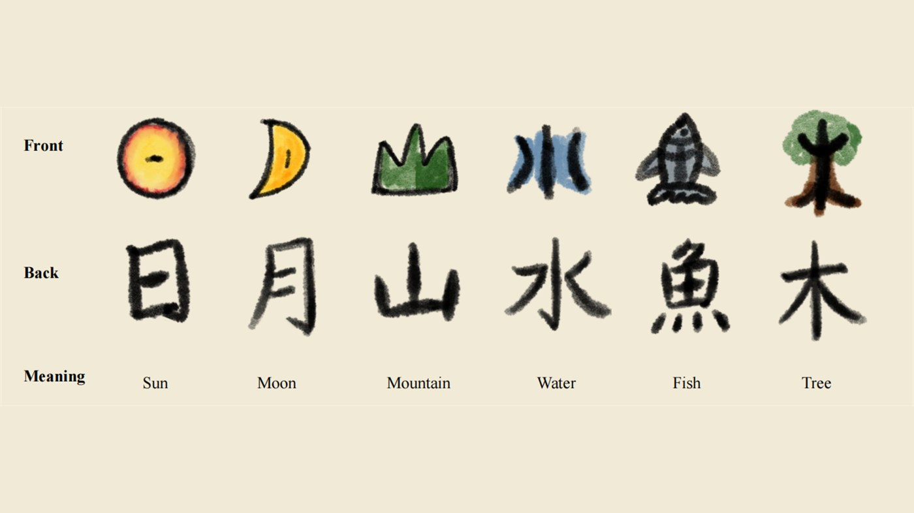
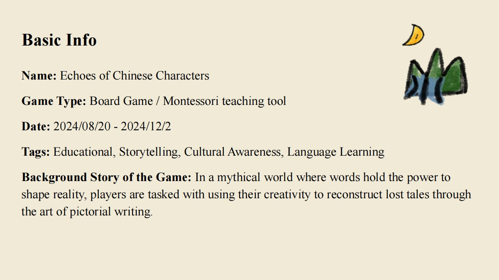
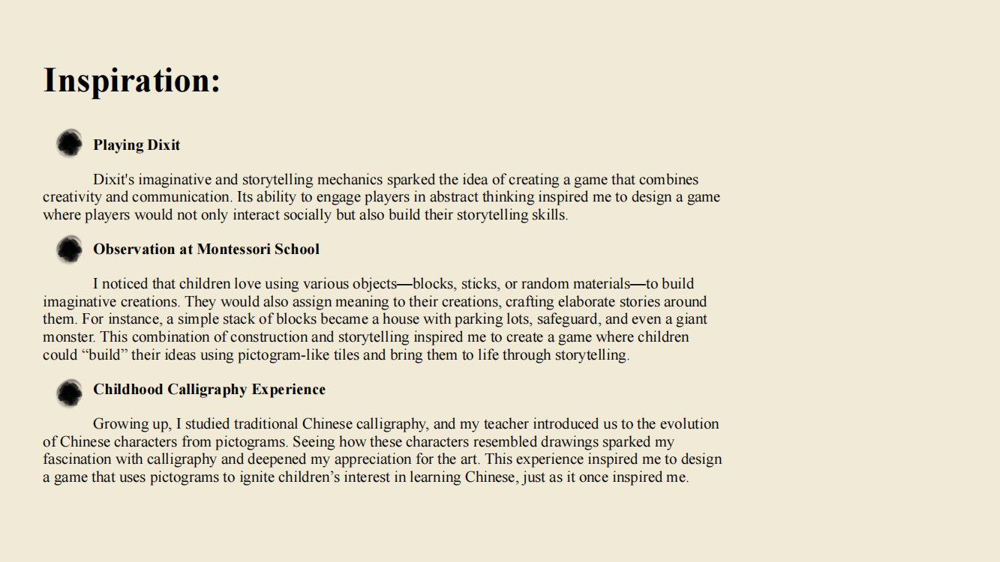
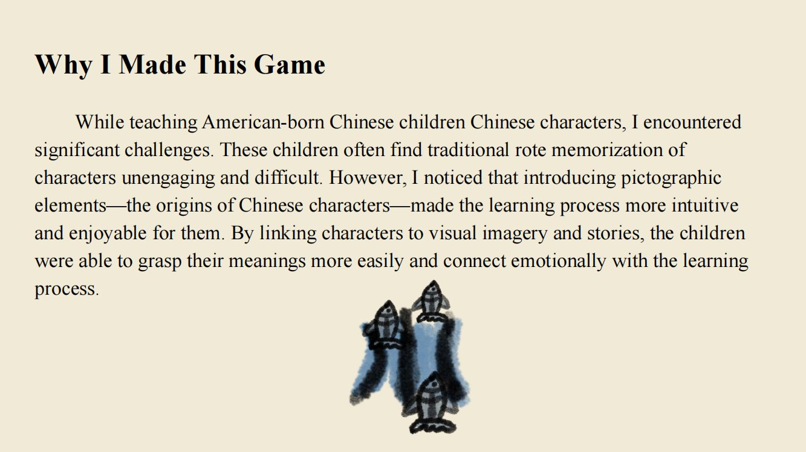
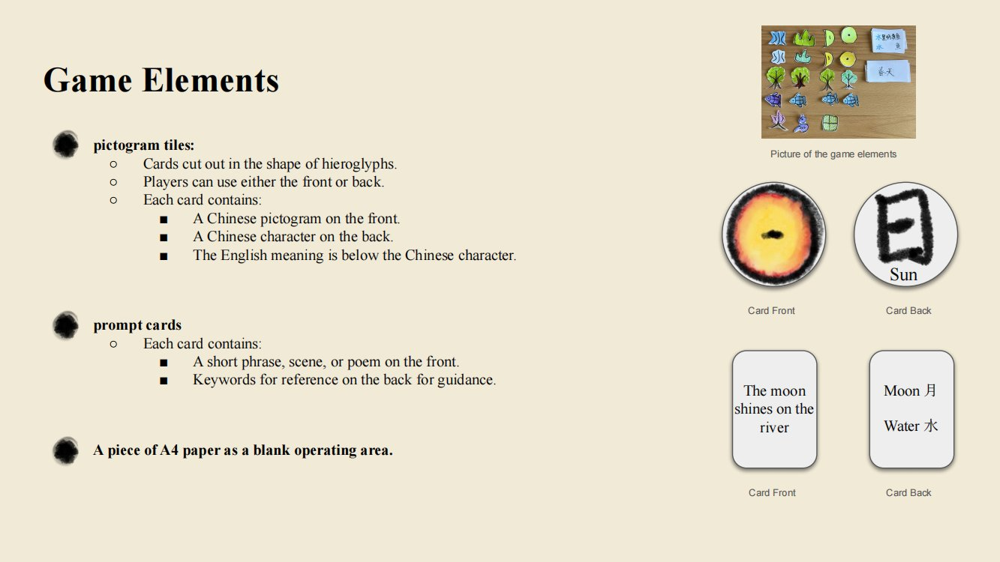
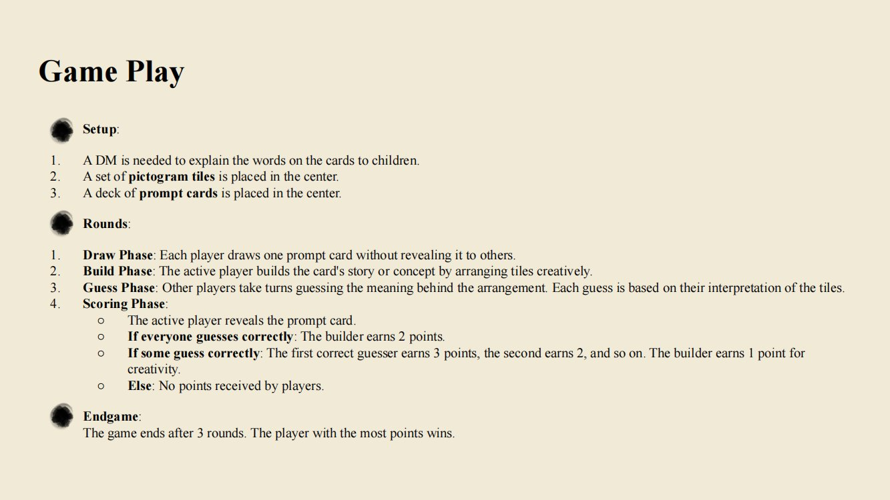
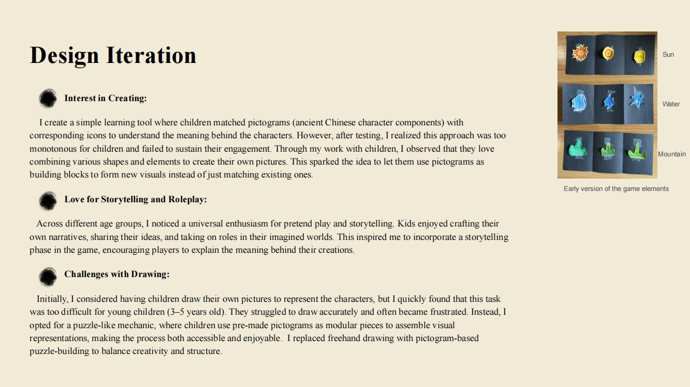
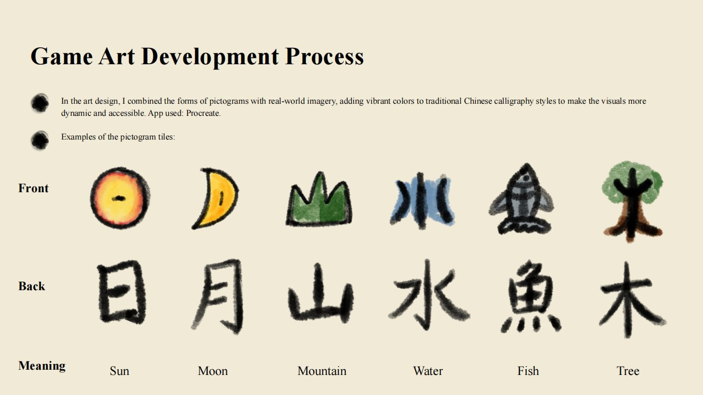
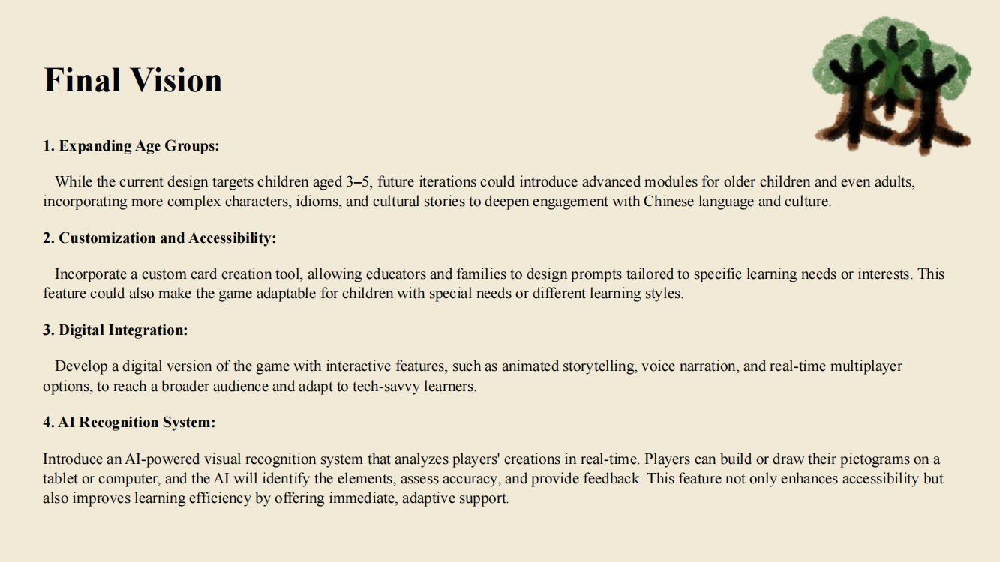

Case Study
Echoes of Chinese Characters
A tabletop language game that turns Chinese characters back into things children can build, move, and tell stories with.

Why I made it
I made the project for young Chinese learners who were not responding to rote memorization. The design starts from two places: the pictographic origins of Chinese characters, and what I actually saw in Montessori settings, where children build with objects, rearrange them, and immediately turn those objects into stories.
So instead of asking a child to remember that a symbol means “mountain,” the game hands them a mountain they can pick up and put next to a river.
The character stops being a symbol to memorise and becomes a piece you can build with.
Core loop
Draw a prompt → build a scene or story with pictogram tiles → let the other players guess → flip the tile to reveal the Chinese character and the English meaning → score.
The reveal is the teaching moment, and it arrives only after the child has already used the image to mean something. Recognition comes after invention, not before it.
Iteration, the strongest part of the project
Matching was too flat. The first version was a straightforward matching game: pair the pictogram with the icon. It tested fine as a concept and died in play. Children lost interest quickly because there was nothing to make. I moved towards construction and puzzle-like pictogram building, where the shape of the character can be physically manipulated.
Storytelling and roleplay added. Across age groups I kept seeing the same enthusiasm for pretend play. Adding a storytelling phase meant the child has to use the relationships between images rather than recognising one isolated symbol.
Freehand drawing cut. I originally wanted children to draw their own characters. For three- to five-year-olds that asks too much motor and expressive control, and it produced frustration rather than invention. I replaced it with modular pre-made pictograms, which keeps room for invention without making the tool punishing.
Future concepts, not implemented: a broader age range, custom cards, accessibility options, a digital version, and AI visual recognition.
Project materials
The full design deck: premise, inspiration, game elements, rules, iteration, art process, and future direction.







